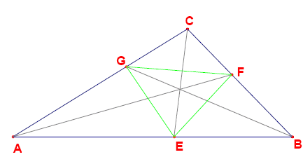

Given is an integer sided triangle $ABC$ with sides $a \le b \le c$.
($AB = c$, $BC = a$ and $AC = b$.)
The angular bisectors of the triangle intersect the sides at points $E$, $F$ and $G$ (see picture below).

The segments $EF$, $EG$ and $FG$ partition the triangle $ABC$ into four smaller triangles: $AEG$, $BFE$, $CGF$ and $EFG$.
It can be proven that for each of these four triangles the ratio area($ABC$)/area(subtriangle) is rational.
However, there exist triangles for which some or all of these ratios are integral.
How many triangles $ABC$ with perimeter $\le 100\,000\,000$ exist so that the ratio area($ABC$)/area($AEG$) is integral?
No test cases available.